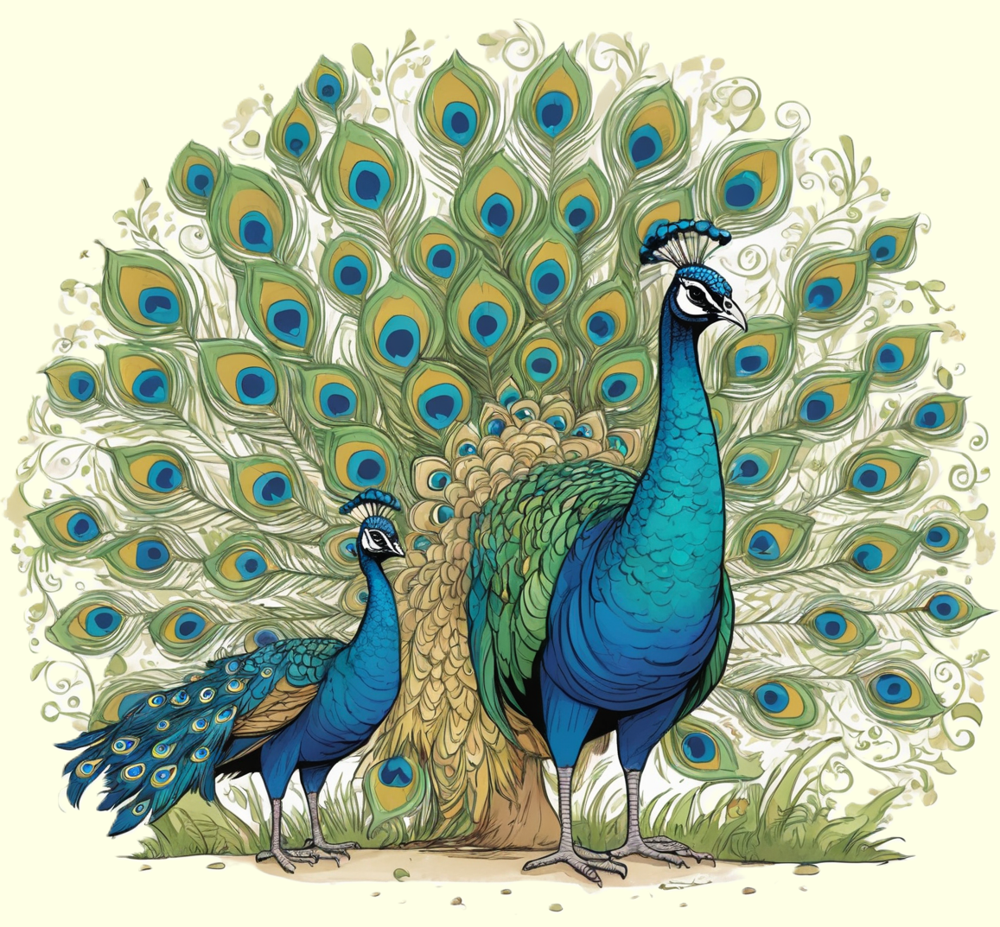

Der Blaue Pfau, ein wahrer Prachtvogel, begeistert mit seinem bunten Federkleid und seinen eindrucksvollen Radtänzen.
Erkunde die faszinierende Welt dieses farbenfrohen Vogels und erfahre, wie er mit seinem auffälligen Aussehen und Verhalten beeindruckt.

Schillernde Kunstwerke der Natur
Blaue Pfauen sind faszinierende Vögel, die durch ihre lebendigen
und schillernden Farben beeindrucken. Die Männchen, auch als Pfauenhähne
bekannt, sind besonders auffällig mit ihrem prächtigen Federkleid.
Das auffälligste Merkmal ist das schimmernde, leuchtend blaue Gefieder,
das sich in wunderschönen Augenmustern entfaltet. Wenn sie ihr Gefieder
aufstellen, zeigen die blauen Pfauen eine atemberaubende Schönheit,
um die Aufmerksamkeit der Weibchen zu gewinnen.
Die langen und farbenfrohen Schwanzfedern, auch Pfauenfedern genannt,
sind ein spektakulärer Anblick. Bei der Balz spreizt der Pfauenhahn
seine Federn wie einen Fächer und tanzt um das Weibchen herum.
Diese prächtigen Federn werden nicht nur für den Balztanz verwendet,
sondern helfen auch dabei, die Aufmerksamkeit von Raubtieren abzulenken.
Gemeinschaftsleben im Federkleid
Blaue Pfauen sind gesellige Vögel, die gerne in Gruppen leben.
Diese Gruppen werden als Schwärme bezeichnet und bestehen oft aus
mehreren Weibchen und einem dominanten Pfauenhahn. Die Weibchen, auch
als Pfauenweibchen bekannt, haben ein weniger farbenfrohes, aber dennoch
elegantes Gefieder. Gemeinsam suchen sie nach Nahrung, wie Insekten,
Früchten und Samen, während der Pfauenhahn aufmerksam auf mögliche Gefahren achtet.
In der Gemeinschaft zeigen die Pfauenhähne nicht nur ihre prächtigen Federn,
sondern auch ihre vielfältigen Laute. Ihr Rufen und Trommeln dient dazu,
die Gruppe zu koordinieren und ihre Anwesenheit bekannt zu machen.
Dieses gesellige Verhalten zeigt, dass die blauen Pfauen nicht nur
wegen ihres auffälligen Aussehens, sondern auch wegen ihrer interessanten
sozialen Interaktionen bewundert werden können.